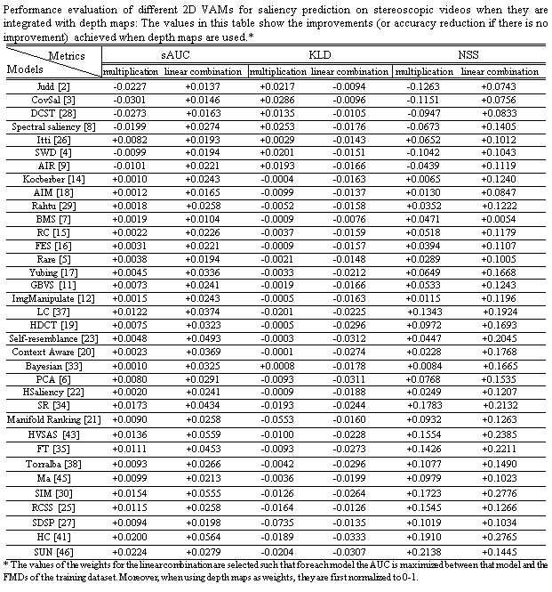

Amin Banitalebi Dehkordi, PhD
(Amin Banitalebi)
(Amin Banitalebi)
Links
Benchmark Eye-Tracking Dataset for Visual Saliency Prediction on Stereoscopic 3D Video
• 3D Visual Attention Models (3D-VAM): 3D-VAMs attempt to predict the locations in 3D videos which are likely to attract the attention.
• DML-iTrack-3D: DML-iTrack-3D is an eye-tracking dataset of stereoscopic 3D videos available for the research community to use for non-commercial purposes.
Contact me if you intend to use the dataset for commercial purposes.
DML-iTrack-3D dataset contains the eye-tracking data of 61 stereoscopic 3D sequences collected from 24 subjects. 27 videos are marked as the "training" videos
and their corresponding fixation maps are available to download. The rest of the videos (34) are marked as the "validation" set and are used for performance
evaluations. The fixation maps of the validation set is not made publicly available to conduct a fair comparison among the performance of various visual attention
models:
Download from: http://dml.ece.ubc.ca/data/DML-iTrack-3D/
Training Sequences: Videos (YUV 4:2:0) 45.3 GB Depth Maps 22.6 GB Fixation Maps: 2D 22.6 GB 3D 22.6 GB
Validation Sequences: Videos (YUV 4:2:0) 58.0 GB Depth Maps 29.0 GB Fixation Maps: 2D 29.0 GB 3D 29.0 GB
Download Mirror (in single video files): Visit datasets page to get single video links to the DML-iTrack-3D database.
• Our Benchmark dataset: Performance of different 2D and 3D visual attention models is evaluated over the UBC3DEye dataset. Various saliency metrics are
adopted. Below, find the performance evaluation results. To rank the VAMs based on their accuracy, different models are ranked according to each metric
separately and the avergae of the ranks is used to sort these methods (we use only sAUC, KLD, and NSS for ranking). Details regarding our dataset and
performance evaluations can be find in the following paper:
* A. Banitalebi-Dehkordi, E. Nasiopoulos, M.T. Pourazad, and P. Nasiopoulos, "benchmark three-dimensional eye-tracking dataset for visual saliency prediction
on stereoscopic three dimensional video," SPIE Journal of Electronic Imaging, vol. 25, issue 1, 013008, doi:10.1117/1.JEI.25.1.013008, 2016. pdf - published
• Submit New VAMs: Send us a link to download the results of your saliency prediction algorithms over the validation part of the UBC3DEye dataset. We will
evaluate the performance of your VAM and add your model to the benchmark. Note that your saliency maps should be one YUV 4:2:0 video file per each video.
Contact me if you have any questions.
• LBVS-3D: Learning-Based Visual Saliency prediction for stereoscopic 3D video: Our proposed saliency prediction method for stereoscopic 3D video. Details can
be found in the following paper:
* A. Banitalebi-Dehkordi, M.T. Pourazad, and P. Nasiopoulos, "A Learning-Based Visual Saliency prediction model for stereoscopic 3D video (LBVS-3D),"
Multimedia Tools and Applications, 2016, DOI 10.1007/s11042-016-4155-y. camera ready.pdf - published version
* Code: Can be downloaded from here.
Copyright © 2018 by "Amin Banitalebi" · All Rights reserved · E-Mail: amin[dot]banitalebi[at]gmail.com


• References:
[1] A. Banitalebi-Dehkordi, M. T. Pourazad, and Panos Nasiopoulos, “LBVS-3D: Learning-Based Visual Saliency prediction for stereoscopic 3D video,” Submitted.
[2] T. Judd, K. Ehinger, F. Durand, and A. Torralba, “Learning to predict where humans look,” ICCV 2009.
[3] E. Erdem and A. Erdem, “Visual saliency estimation by nonlinearly integrating features using region covariances,” Journal of Vision, 2013.
[4] L. Duan, Ch. Wu, J. Miao, L. Qing, and Y. Fu, “Visual saliency detection by spatially weighted dissimilarity,” CVPR 2011.
[5] N. Riche, M. Mancas, M. Duvinage, M. Mibulumukini, B. Gosselin, and T. Dutoit, “RARE2012: A multi-scale rarity-based saliency detection with its comparative statistical
analysis,” Signal Processing: Image Communication, 2013.
[6] R. Margolin, L. Zelnik-Manor, and A. Tal. “What makes a patch distinct,” CVPR 2013.
[7] J. Zhang and S. Sclaroff, “Saliency detection: a boolean map approach,” ICCV 2013.
[8] B. Schauerte and R. Stiefelhagen, “Quaternion-based spectral saliency detection for eye fixation prediction,” ECCV 2012.
[9] Y. Fang, Z. Chen, W. Lin, C.-W. Lin, “Saliency detection in the compressed domain for adaptive image retargeting,” IEEE Transactions on Image Processing, vol. 21, no. 9, pp.
3888-3901, 2012.
[10] Y. Fang, J. Wang, M. Narwaria, P.L. Callet, and W. Lin, “Saliency detection for stereoscopic images,” IEEE Transactions on Image Processing, vol. 23, no. 6, pp. 2625-2636,
Feb. 2014.
[11] J. Harel, C. Koch, and P. Perona, “Graph-Based Visual Saliency,” NIPS 2006.
[12] R. Margolin, L. Zelnik-Manor, and A. Tal, “Saliency for image manipulation,” CGI 2012.
[13] L. Itti, C. Koch, and E. Niebur, “A model of saliency-based visual attention for rapid scene analysis,” IEEE Transactions on Pattern Analysis and Machine Intelligence, vol. 20,
No. 11, pp. 1254-1259, Nov 1998.
[14] C. Kocberber and A.A. Salah, “Video retargeting: video saliency and optical flow based hybrid approach,” AAAI 2014.
[15] M.-M. Cheng, G.-X. Zhang, N.J. Mitra, X. Huang, and S.-M. Hu, “Global Contrast based Salient Region Detection,” IEEE CVPR, p. 409-416, 2011.
[16] H.R. Tavakoli, E. Rahtu, and J. Heikkila, “Fast and efficient saliency detection using sparse sampling and kernel density estimation,” SCIA 2011.
[17] T. Yubing, F.A. Cheikh, F.F.E. Guraya, H. Konik, A. Tremeau, “A spatiotemporal saliency model for video surveillance,” Cognitive Computation, vol. 3, pp. 241-263, 2011.
[18] N. Bruce, J. Tsotsos, “Attention based on information maximization,” Journal of Vision, 2007.
[19] J. Kim, D. Han, Y-W. Tai, and J. Kim, “Salient region detection via high-dimensional color transform,” CVPR 2014.
[20] S. Goferman, L. Zelnik-Manor, and A. Tal, “Context-aware saliency detection,” CVPR 2010.
[21] Ch. Yang, L. Zhang, H. Lu, M-H. Yang, and X. Ruan, “Saliency detection via graph-based manifold ranking,” IEEE Conference on Computer Vision and Pattern Recognition
(CVPR 2013), Portland, June, 2013.
[22] Q. Yan, L. Xu, J. Shi, and J. Jia, “Hierarchical saliency detection,” CVPR 2013.
[23] H.J. Seo and P. Milanfar. “Static and space-time visual saliency detection by self-resemblance,” Journal of Vision, 2012.
[24] T. Judd, K. Ehinger, F. Durand, and A. Torralba, “Learning to predict where humans look,” ICCV 2009.
[25] T.N. Vikram, M. Tscherepanow, and B. Wrede, “A saliency map based on sampling an image into random rectangular regions of interest,” Pattern Recognition, 2012.
[26]L. Itti, C. Koch, and E. Niebur, “A model of saliency-based visual attention for rapid scene analysis,” IEEE Transactions on Pattern Analysis and Machine Intelligence, vol. 20,
No. 11, pp. 1254-1259, Nov 1998.
[27] L. Zhang, Zh. Gu, and H. Li, “SDSP: a novel saliency detection method by combining simple priors,” ICIP, 2013.
[28] S-h. Zhong, Y. Liu, F. Ren, J. Zhang, and T. Ren, “Video saliency detection via dynamic consistent spatio-temporal attention modelling,” 27th AAAI Conference on
Artificial Intelligence, 2013.
[29] E. Rahtu, J. Kannala, M. Salo, and J. Heikkilä, “Segmenting salient objects from images and Videos,” European Conference on Computer Vision, ECCV 2010.
[30] N. Murray, M. Vanrell, X. Otazu, and C.A. Parraga, “Saliency estimation using a non-parametric vision model,” CVPR 2011.
[31] L. Coria, D. Xu, and P. Nasiopoulos, “Automatic stereoscopic 3D video reframing," in Proc. of 3DTV-Conference: The True Vision - Capture, Transmission and Display of 3D
Video (3DTV-CON), 2012 , ETH Zurich, Oct. 15-17, 2012, pp. 1-4.
[32] H.J. Seo and P. Milanfar. “Static and space-time visual saliency detection by self-resemblance,” Journal of Vision, 2012.
[33] Y. Xie, H. Lu, and M-H. Yang, Bayesian saliency via low and mid level cues,” IEEE Transactions on Image Processing (TIP), vol. 22, no. 5, pp. 1689-1698, 2013.
[34] X. Hou and L. Zhang, “Saliency detection: a spectral residual approach,” IEEE Computer Society Conference on Computer Vision and Pattern Recognition, 2007, pp. 1-8.
[35] R. Achanta, S. Hemami, F. Estrada, and S. Susstrunk,“Frequency-tuned salient region detection,” in IEEE CVPR, 2009, pp. 1597-1604.
[36] J. Wang, M.P.D. Silva, P.L. Callet, and V. Ricordel, “Computational model of stereoscopic 3D visual saliency,” IEEE Transactions on Image Processing, vol. 22, no. 6,
June 2013.
[37] Y. Zhai and M. Shah, “Visual attention detection in video sequences using spatiotemporal cues,” in ACM Multimedia, 2006, pp. 815-824.
[38] A. Torralba, A. Oliva, M.S. Castelhano, and J.M. Henderson, “Contextual guidance of attention in natural scenes: The role of global features on object search,” Psychological
Review, 2006.
[39] N. Ouerhani and H. Hugli, “Computing visual attention from scene depth,” in Proc. IEEE 15th Int. Conf. Pattern Recognition., vol. 1, Sep. 2000, pp. 375-378.
[40] X. Fan, Z. Liu, and G. Sun, “Salient region detection for stereoscopic images,” 19th International Conference on Digital Signal Processing, 2014, Hong Kong.
[41] M.-M. Cheng, G.-X. Zhang, N.J. Mitra, X. Huang, and S.-M. Hu, “Global Contrast based Salient Region Detection,” IEEE CVPR, p. 409-416, 2011.
[42] Y. Niu, Y. Geng, X. Li, and F. Liu, “Leveraging stereopsis for saliency analysis,” CVPR 2012.
[43] Y. Fang, W. Lin, B-S. Lee, C.T. Lau, Zh. Chen, Ch-W. Lin, "Bottom-up saliency detection model based on human visual sensitivity and amplitude spectrum," IEEE
Transactions on Multimedia 14(1): 187-198 (2012).
[44] Y. Zhai and M. Shah, “Visual attention detection in video sequences using spatiotemporal cues,” in ACM Multimedia, 2006, pp. 815-824.
[45] Y-F. Ma, H-J. Zhang, “A model of motion attention for video skimming,” IEEE ICIP 2002.
[46] H.J. Seo and P. Milanfar. “Static and space-time visual saliency detection by self-resemblance,” Journal of Vision, 2012.
[47] Q. Jiang, F. Duan, and F. Shao, “3D Visual attention for stereoscopic image quality assessment,” Journal of Software, vol. 9, no. 7, July 2014.
[48] R. Ju, L. Ge, W. Geng, T. Ren, and G. Wu, “Depth saliency based on anisotropic center-surround difference,” ICIP 2014.
[49] C. Chamaret, S. Godeffroy, P. Lopez, and O. L. Meur, “Adaptive 3D rendering based on region-of-interest,” in Proc. SPIE, Feb. 2010.
[50] Y. Zhang, G. Jiang, M. Yu, and K. Chen, “Stereoscopic visual attention model for 3D video,” Advances in Multimedia Modeling, New York, USA: Springer-Verlag, 2010, pp.
314-324.
Model
|
AUC
|
sAUC
|
EMD
|
SIM
|
PCC
|
KLD
|
NSS
|
Simulation
Time (sec)
|
Average
Rank
|
Type
|
Infinite humans
|
0.9921
|
0.9908
|
0.03
|
0.9511
|
0.9968
|
0
|
4.2524
|
1
|
||
LBVS-3D [1]
|
0.7243
|
0.7795
|
0.4528
|
0.2966
|
0.2620
|
0.1289
|
1.4167
|
73.11
|
2.33
|
3D video
|
LBVS-3D static [1]
|
0.6833
|
0.7091
|
0.5310
|
0.2544
|
0.2376
|
0.1963
|
1.1782
|
30.55
|
3.33
|
3D image
|
One human
|
0.7033
|
0.7379
|
0.8884
|
0.4651
|
0.4995
|
0.2232
|
2.1140
|
0
|
5.33
|
|
Fang [10]
|
0.6655
|
0.6915
|
0.6676
|
0.2229
|
0.1987
|
0.2165
|
1.0380
|
3.25
|
5.33
|
3D image
|
Coria [31]
|
0.6584
|
0.6843
|
0.6568
|
0.2346
|
0.1417
|
0.2238
|
1.1361
|
3.03
|
8
|
3D video
|
Chamaret [49]
|
0.6669
|
0.6787
|
0.7568
|
0.2089
|
0.1568
|
0.2253
|
0.9056
|
64.62
|
8.33
|
3D video
|
Park [24]
|
0.6391
|
0.6346
|
0.8081
|
0.1841
|
0.1022
|
0.2198
|
0.7783
|
1.68
|
9
|
3D image
|
Ouerhani [39]
|
0.6224
|
0.6456
|
0.8768
|
0.1934
|
0.0967
|
0.2179
|
0.5459
|
7.21
|
9.33
|
3D image
|
Fan [40]
|
0.6349
|
0.6330
|
0.9014
|
0.1879
|
0.0856
|
0.2116
|
0.4185
|
128.98
|
9.33
|
3D image
|
Niu [42]
|
0.6078
|
0.6124
|
0.9339
|
0.1726
|
0.1208
|
0.2227
|
0.3334
|
165.82
|
9.67
|
3D image
|
Ju [48]
|
0.5811
|
0.5948
|
1.0330
|
0.1623
|
0.0827
|
0.2109
|
0.2778
|
2.05
|
10.67
|
3D image
|
Jiang [47]
|
0.6158
|
0.6089
|
0.9949
|
0.1934
|
0.1211
|
0.2326
|
0.3656
|
1.25
|
11.33
|
3D image
|
Center
|
0.5709
|
0.5999
|
0.6536
|
0.2128
|
0.1104
|
0.2445
|
0.6524
|
0.06
|
13
|
|
Zhang [50]
|
0.5699
|
0.5754
|
1.0970
|
0.1528
|
0.0563
|
0.2293
|
0.2111
|
0.73
|
14.33
|
3D image
|
Chance
|
0.5
|
0.5
|
1.1140
|
0.1421
|
0
|
0.2393
|
0.0789
|
0.072
|
15.67
|
Performance evaluation of 3D VAMs over our stereo video dataset:
Performance evaluation of 2D VAMs when compared against the 2D & 3D eye-tracking FDMs:

Performance improvements when depth maps are integrated to 2D VAMs for saliency prediction on 3D video